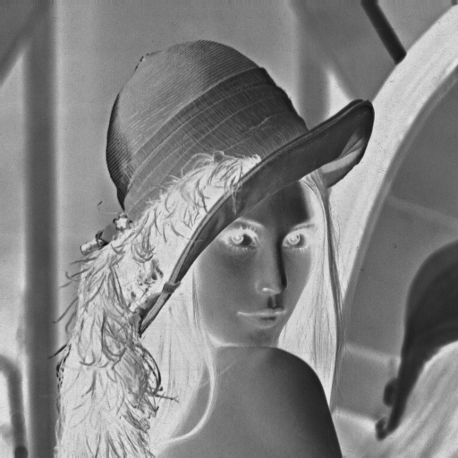
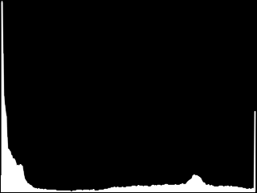

Elle semble toute simple, cette question, mais si vous aviez à y répondre avec vos propres mots, que diriez-vous ?
Allez, je vous aide un peu. « Voir » c'est, entre autres, discerner et reconnaître les formes, les couleurs et les textures du monde qui nous entoure.
On pourrait croire, à tort, que nous avons besoin uniquement de nos yeux pour cela, mais la réalité est tout autre : nos yeux ne servent qu'à capter le signal contenu dans les rayons lumineux qui viennent frapper nos rétines, pas à en extraire des informations. Ça, c'est le travail de la zone de notre cerveau que nous appelons le cortex visuel, dont les « bugs » ne sont rien de moins que les illusions d'optique ! Cela veut dire que la vision, c'est l'association entre le sens de la vue et un ensemble de processus cognitifs pour lesquels nous avons besoin d'utiliser notre cerveau.
Aujourd'hui, cela fait déjà bien longtemps que nous avons donné le sens de la vue aux ordinateurs grâce aux caméras numériques, mais si l'on se fie à la définition que nous venons de formuler, cela ne suffit pas à les doter de vision : il leur manque encore la capacité à extraire des informations des images et des flux vidéo, de manière à percevoir, analyser et comprendre le monde qu'ils observent.
C'est ici qu'intervient ce vaste domaine de recherche qu'est la vision par ordinateur, à la croisée des chemins entre les mathématiques, le traitement du signal et l'intelligence artificielle.
Dans ce cours, nous allons découvrir ensemble les notions de base du traitement d'images et de flux vidéo, ainsi que les principales problématiques de la vision par ordinateur. Et elles sont nombreuses, vous pouvez me croire ! Entre le filtrage, la segmentation d'objets, la reconnaissance de formes, la détection du mouvement, le suivi de cibles et autres joyeusetés, nous aurons l'occasion de découvrir ensemble un large spectre de problèmes divers et variés, ainsi que des éléments de réponse pour les résoudre.
Pour suivre, vous aurez besoin d'être à l'aise avec le langage C, que nous utiliserons avec la bibliothèque OpenCV pour réaliser nos programmes. Quelques connaissances de base en mathématiques vous seront aussi demandées, mais un effort particulier a été fourni pour rendre les explications compréhensibles par le plus grand nombre.
Avant de nous plonger corps et âme dans la vision par ordinateur, attardons-nous un moment sur quelques considérations d'ordre général, et préparons notre matériel.
Ce cours a pour but de vous introduire les notions fondamentales de la vision par ordinateur. Plus précisément, son objectif premier est de vous aider à acquérir une certaine intuition du traitement d'images et de flux vidéo, ainsi que des diverses problématiques de l'intelligence artificielle qui y sont liées.
Tout cela passe par l'acquisition de connaissances en informatique et en traitement du signal (à tout le moins, comment sont représentés les images numériques et les flux vidéo dans un ordinateur…) et des notions de base concernant plusieurs outils mathématiques très utilisés dans ce domaine (la manipulation de matrices, la morphologie, les géométries discrète, projective et épipolaire, quelques notions de statistiques…).
Il s'agit, pour résumer, de faire avec vous un tour d'horizon de la vision par ordinateur, que vous pourrez approfondir par la suite en vous intéressant à une littérature plus spécialisée dans le domaine.
Public et connaissances requises
Si d'un point de vue théorique, la vision par ordinateur est un domaine nécessitant d'ordinaire une culture scientifique certaine, un effort particulier de vulgarisation a été fourni de manière à rendre ce tutoriel accessible pour des lecteurs ayant un bagage mathématique pré-baccalauréat. Néanmoins, ponctuellement, certaines parties facultatives du cours, portant sur des points qu'il est intéressant d'aborder mais non fondamentaux, pourront requérir un niveau de connaissances plus avancé. Ces parties, ainsi que les connaissances requises pour les suivre, vous seront systématiquement signalées.
D'un point de vue technique, afin que les explications ne soient pas noyées dans un flot d'informations périphériques inutiles, ce tutoriel part du principe que vous savez programmer en C, configurer votre environnement de développement, utiliser votre compilateur et lire une documentation en anglais. Des liens vers de la documentation annexe seront fournis lorsque ce sera nécessaire. En ce qui concerne votre niveau de programmation, les deux premières parties du cours de C de Mathieu Nebra devraient suffire, en considérant toutefois dans ce cas que vous n'avez rien contre le fait de découvrir et acquérir, ponctuellement, des pratiques dont vous n'avez pas forcément l'habitude.
Organisation
Ce cours est organisé de la façon suivante :
La première partie aborde les notions préliminaires fondamentales à la compréhension de tout le reste. Ses chapitres sont écrits de façon à être lus dans l'ordre.
Les parties suivantes abordent chacune une problématique particulière de la vision par ordinateur. Le premier chapitre de chaque partie donne la formulation d'un verrou théorique (par exemple : « détecter les objets en mouvement sur une vidéo », « reconnaître un objet dans une image », …) ainsi qu'une première approche naïve pour tenter de lever ce dernier, et les chapitres suivants abordent différentes approches alternatives, permettant bien souvent d'améliorer les résultats, ou d'aborder le problème selon un angle différent. A priori, ces parties peuvent être lues dans n'importe quel ordre.
Chaque fois que cela sera possible, les diverses notions abordées seront présentées de la façon suivante :
Formulation de la notion sous la forme d'un verrou technique ou théorique,
OpenCV (Open Source Computer Vision) est une bibliothèque proposant un ensemble de plus de 2500 algorithmes de vision par ordinateur, accessibles au travers d'API pour les langages C, C++, et Python. Elle est distribuée sous une licence BSD (libre) pour les plate-formes Windows, GNU/Linux, Android et MacOS.
Initialement écrite en C il y a 10 ans par des chercheurs de la société Intel, OpenCV est aujourd'hui développée, maintenue, documentée et utilisée par une communauté de plus de 40 000 membres actifs. C'est la bibliothèque de référence pour la vision par ordinateur, aussi bien dans le monde de la recherche que celui de l'industrie.
Afin de mieux vous présenter son étendue et ce qu'elle permet de faire, jetons un œil aux principaux modules accessibles au travers de son API C.
core : les fonctionnalités de base. Cette bibliothèque permet de manipuler les structures de base, réaliser des opérations sur des matrices, dessiner sur des images, sauvegarder et charger des données dans des fichiers XML…
imgproc : traitement d'image. Nous entrons dans le cœur du sujet. Les fonctions et structures de ce module ont trait aux transformations d'images, au filtrage, à la détection de contours, de points d'intérêt…
features2d : descripteurs. Ce module concerne principalement l'extraction de descripteurs selon deux approches courantes (SURF et StarDetector), que nous aborderons lorsque nous nous intéresserons à la caractérisation d'images.
objdetect : détection d'objets. Cette bibliothèque permet de faire de la reconnaissance d'objets dans une image au moyen de l'algorithme Adaboost (Viola & Jones, 2001). Nous y reviendrons lorsque nous parlerons d'apprentissage et de reconnaissance de formes.
video : traitement de flux vidéo. Ces fonctions servent à segmenter et suivre les objets en mouvement dans une vidéo.
highgui : entrées-sorties et interface utilisateur. OpenCV intègre sa propre bibliothèque haut-niveau pour ouvrir, enregistrer et afficher des images et des flux vidéo. Celle-ci contient aussi un certain nombre de fonctions permettant de réaliser des interfaces graphiques très simples, mais largement suffisantes pour tester nos programmes.
calib3d : calibration, estimation de pose et stéréovision. Ce module contient des fonctions permettant de reconstruire une scène en 3D à partir d'images acquises avec plusieurs caméras simultanément.
En ce qui concerne la documentation, vous trouverez tout ce dont vous aurez besoin sur cette page. Sachez que l'API C est stable. Cela signifie qu'il est très peu probable que grand-chose ne soit modifié ou retiré de son côté dans les versions 2.x d'OpenCV, et c'est la raison pour laquelle j'ai choisi d'utiliser cette API dans ce cours, plutôt que l'interface C++ qui, elle, est un peu moins mature.
Sous windows, la méthode d'installation dépend de l'environnement que vous utilisez pour développer. Rendez-vous sur cette page.
Si vous utilisez Microsoft Visual Studio, vous avez tout intérêt à utiliser l'installeur exécutable, puisqu'il contient les bibliothèques compilées spécialement pour votre IDE.
Si vous utilisez un autre IDE (Code::Blocks, Eclipse, etc.), il faudra que vous téléchargiez le paquet OpenCV-2.X.Y-win-src.zip, et que vous génériez les bibliothèques d'OpenCV avec CMake, en suivant simplement les instructions de cette page, qui vous montre comment faire en vidéo, en plus des explications détaillées.
Sous GNU/Linux, Unix
Sous Linux et Unix, OpenCV 2 se trouve nécessairement dans les dépôts de votre distribution, quelle qu'elle soit, en version 2.
Sous Ubuntu, il vous suffit de taper la commande suivante dans un terminal :
Si toutefois vous désirez compiler OpenCV vous-même, pour obtenir une version plus récente que celle de vos dépôts (même si cela ne fera aucune différence pour suivre ce tutoriel), vous pouvez vous rendre sur cette page, et suivre les indications pas à pas.
Sous MacOS
Sous MacOS, vous avez deux possibilités, la simple et la compliquée. :) En vous rendant sur cette page, vous trouverez un installeur (.dmg) tout prêt pour OpenCV 2.0 ou OpenCV 1.1, qui se chargera de tout régler pour vous. Je vous rappelle qu'en ce qui nous concerne, étant donné que nous allons utiliser l'API C, OpenCV 2.0 suffira très largement pour suivre ce tutoriel (même la version 1.1 suffit, pour tout vous avouer). Si vous tenez quand même à rester à la pointe, vous pouvez compiler OpenCV avec CMake pour votre machine en suivant les instructions de cette page.
Configuration de votre environnement
Devant le grand nombre de possibilités que vous avez suivant l'environnement que vous utilisez pour travailler, il ne serait pas pertinent de vous décrire en détail la marche à suivre pour chacune d'entre elles. En revanche, voici quelques rappels simples, qui, moyennant le fait que vous sachiez utiliser votre IDE, devraient suffire à vous pointer dans la bonne direction.
La génération des programmes en C se fait en deux étapes : la compilation du code et l'édition des liens. De façon à pouvoir utiliser une bibliothèque tierce, votre compilateur doit savoir où il peut trouver les fichiers d'en-tête d'OpenCV, et l'éditeur de lien (linker) doit savoir dans quelles bibliothèques se trouvent les symboles des fonctions qu'il utilise.
La configuration de votre environnement consiste ni plus, ni moins, à dire au compilateur où se trouvent les en-têtes, et à l'éditeur de liens où se trouvent les bibliothèques.
Sous Windows
Les fichiers d'en-tête se trouvent dans le sous-répertoire include du dossier où OpenCV est installée. Il faut donc ajouter le chemin de ce répertoire dans les paramètres du compilateur.
Pour les bibliothèques, celles-ci se trouvent dans le sous-répertoire libs du même dossier. Il faudra donc, suivant votre IDE, préciser le chemin de ce sous-répertoire, ou bien donner un à un les noms des fichiers .lib (ou .dll) qu'il contient, dans les options de l'éditeur de liens.
Si vous utilisez Microsoft Visual Studio, vous trouverez des informations détaillées pour votre IDE sur cette page de la documentation. Si vous utilisez Code::Blocks, vous pouvez suivre ces instructions qui vous montreront comment configurer votre IDE pour qu'il utilise opencv avec pkg-config.
Sous GNU/Linux et Unix
Sous GNU/Linux et Unix, les fichiers d'en-tête et les bibliothèques sont installés dans des emplacements standards. OpenCV s'utilise et se configure donc, sur ces OS, strictement de la même manière que toutes les autres bibliothèques.
Si vous utilisez Code::Blocks, vous pouvez configurer ce dernier en suivant les indications de cette page.
Si vous compilez vos fichiers manuellement, voici un exemple de compilation d'un programme (helloworld.c) avec opencv dans la console :
# compilation
gcc -c helloworld.c -Wall `pkg-config opencv --cflags`
# édition des liens
gcc helloworld.o -o helloworld `pkg-config opencv --libs`
Si vous utilisez CMake (la solution que je privilégie personnellement), voici un exemple de fichier CMakeLists.txt minimaliste pour le même programme :
# Ajustez en fonction de votre version de CMake
cmake_minimum_required (VERSION 2.8)
# Nom du projet
project (hello)
find_package (OpenCV REQUIRED)
# Exécutable "hello", compilé à partir du fichier helloworld.c
add_executable (hello helloworld.c)
# Hello sera linké avec les bibliothèques d'OpenCV
target_link_libraries (hello ${OpenCV_LIBS})
Test de votre installation
Pour tester votre installation et votre configuration, essayez de compiler le programme suivant (inutile de le lancer ou de chercher à le comprendre pour l'instant, nous verrons cela dans le prochain chapitre) :
Dans ce chapitre, nous allons nous découvrir nos premières structures et fonctions d'OpenCV en apprenant à ouvrir, afficher et sauvegarder des images au moyen du module highgui. Bien qu'elles ne soient pas spécialement intéressantes sur le plan théorique, ces quelques fonctions fondamentales seront réutilisées pratiquement dans tous nos programmes par la suite.
Sans autre forme d'introduction, reprenons le code que je vous ai montré à la fin du chapitre précédent, auquel j'ai ajouté des commentaires.
#include <stdio.h>
#include <stdlib.h>
#include <opencv/highgui.h>
int main (int argc, char* argv[])
{
IplImage* img = NULL;
const char* window_title = "Hello, OpenCV!";
/* Vérification: au moins un argument doit être passé au programme.*/
if (argc < 2)
{
fprintf (stderr, "usage: %s IMAGE\n", argv[0]);
return EXIT_FAILURE;
}
/* Chargement de l'image passée en argument */
img = cvLoadImage(argv[1], CV_LOAD_IMAGE_UNCHANGED);
if (!img)
{
fprintf (stderr, "couldn't open image file: %s\n", argv[1]);
return EXIT_FAILURE;
}
/* Création d'une fenêtre intitulée "Hello, OpenCV!" */
cvNamedWindow (window_title, CV_WINDOW_AUTOSIZE);
/* Affichage de l'image */
cvShowImage (window_title, img);
/* Pause le temps que l'utilisateur appuie sur une touche */
cvWaitKey (0);
/* Destruction de la fenêtre */
cvDestroyAllWindows ();
/* Libération de la mémoire */
cvReleaseImage (&img);
return EXIT_SUCCESS;
}
Comme vous vous en êtes très probablement rendu compte, ce programme attend que vous lui passiez un argument : le chemin d'un fichier d'image sur votre ordinateur.
Sous Windows, il vous suffit, graphiquement, de prendre un fichier image et de le glisser-déposer sur l'exécutable de votre programme.
Sinon, vous pouvez passer cette image en ligne de commande. Par exemple, sous GNU/Linux :
Appuyez sur une touche du clavier pour que la fenêtre se ferme et que le programme s'arrête.
Analyse du code
Pour commencer, prenons ce code pas à pas, et analysons les étapes ensemble.
#include <stdio.h>
#include <stdlib.h>
/* ... */
int main (int argc, char* argv[])
{
/* ... */
/* Vérification: au moins un argument doit être passé au programme.*/
if (argc < 2)
{
fprintf (stderr, "usage: %s IMAGE\n", argv[0]);
return EXIT_FAILURE;
}
C'est grâce à ce morceau de code que l'on passe un argument au programme. Pour rappel, les arguments passés au programme sont contenus sous forme de chaînes de caractères dans le tableau argv (pour "argargument values") et la longueur de ce tableau est contenue dans l'entier argc (pour "argument count"). Pour plus d'informations à ce sujet, je vous renvoie à ce tutoriel de FFMx sur les paramètres de la fonction main.
Le tout premier élément d'argv (argv[0]) est le nom grâce auquel le programme a été appelé. On s'en sert ici pour afficher le message d'aide ("usage"), dans la sortie d'erreur standard si le programme a été invoqué sans argument.
Passons à la suite, où l'on utilise clairement OpenCV.
#include <opencv/highgui.h>
IplImage* img = NULL;
/* Chargement de l'image passée en argument */
img = cvLoadImage(argv[1], CV_LOAD_IMAGE_UNCHANGED);
if (!img)
{
fprintf (stderr, "couldn't open image file: %s\n", argv[1]);
return EXIT_FAILURE;
}
Ici, on fait deux choses intéressantes. La première, c'est déclarer que l'on va utiliser un pointeur sur une structure IplImage. Cette structure, nous allons la considérer comme une « boîte noire » dans ce chapitre, et nous commencerons à la disséquer dans le chapitre suivant. Pour l'instant, retenez simplement qu'il s'agit d'une image dans OpenCV.
Nous utilisons ensuite la fonction cvLoadImage, à laquelle on passe le premier argument du programme (le chemin d'un fichier image sur votre ordinateur), ainsi qu'une constante dont nous nous occuperons plus tard. Cette fonction ouvre l'image dont on lui passe le chemin en argument, et retourne un IplImage* contenant ses données. En cas d'échec de l'ouverture, comme matérialisé par la condition qui suit, la fonction cvLoadImage retourne le pointeur NULL.
Voici le comportement du programme si je lui passe en argument le chemin d'un fichier qu'il ne peut pas charger, ou celui d'un fichier qui n'existe pas :
arnaud@netbook$ ./hello world
couldn't open image file: world
Bien, maintenant, la suite :
const char* window_title = "Hello, OpenCV!";
/* Création d'une fenêtre intitulée "Hello, OpenCV!" */
cvNamedWindow (window_title, CV_WINDOW_AUTOSIZE);
/* Affichage de l'image */
cvShowImage (window_title, img);
Voici ce qui va faire de la highgui votre meilleure amie pour tester vos programmes. Ces deux lignes suffisent à créer une fenêtre et à afficher une image dedans ! Les fenêtres, dans cette bibliothèque, sont identifiées par leur titre. Cela signifie que vous ne pouvez pas avoir deux fenêtres qui ont le même titre, mais vous conviendrez que cette limitation en vaut largement la peine, puisqu'en dehors de cela, vous n'avez même pas à vous inquiéter des détails de l'affichage ; tout est géré pour vous !
Enfin, la fin du programme :
/* Pause le temps que l'utilisateur appuie sur une touche */
cvWaitKey (0);
/* Destruction de la fenêtre */
cvDestroyAllWindows ();
/* Libération de la mémoire */
cvReleaseImage (&img);
La fonction cvWaitKey, lorsqu'une fenêtre est affichée à l'écran, permet de marquer une pause dans le programme en attendant que l'utilisateur appuie sur une touche du clavier. L'argument 0, ici, permet d'attendre indéfiniment.
Les deux fonctions suivantes sont explicites. Notez simplement que la fonction cvReleaseImage attend en paramètre un IplImage** et non un IplImage*.
Pour travailler avec des images, il nous faut un moyen de charger celles-ci dans nos programmes, et éventuellement de sauvegarder le résultat.
Charger une image
Nous avons vu plus haut la fonction cvLoadImage. Voici sa signature :
/**
* Charge une image
* arguments:
* - filename: chemin de l'image à charger
* - iscolor: option permettant de charger l'image en couleur ou en
* niveaux de gris
* retourne:
* Un pointeur sur la structure IplImage dans laquelle le fichier a
* été chargé. NULL en cas d'échec.
*/
IplImage* cvLoadImage (const char* filename, int iscolor);
OpenCV peut charger plusieurs formats d'image différents. Je ne saurais vous donner une liste exacte des formats qui fonctionneront chez vous étant donné que cela dépend de votre système, et des paramètres de compilation si vous avez compilé OpenCV vous-même, mais en principe, vous devriez sans problème pouvoir ouvrir des images au format .jpg, .png, .bmp, et .tif.
Regardons maintenant cet argument iscolor d'un peu plus près et en particulier les différentes constantes que l'on peut utiliser :
CV_LOAD_IMAGE_COLOR : Le fichier sera chargé en mode "couleur", même si l'image est en niveaux de gris.
CV_LOAD_IMAGE_GRAYSCALE : L'image sera chargée en niveaux de gris.
CV_LOAD_IMAGE_UNCHANGED : L'image sera chargée telle qu'elle
Ces considérations sur le mode couleur ou niveaux de gris feront du sens dans le prochain chapitre, lorsque nous verrons plus en détail la structure IplImage. Retenez simplement que cette fonction permet de faire automatiquement la conversion si nécessaire lors du chargement du fichier.
Sauvegarder une image
Voici maintenant la fonction qui nous permettra d'enregistrer une image sur le disque dur :
/**
* Sauvegarde une image sur le disque dur
* arguments:
* - filename: chemin du fichier à sauvegarder
* - image: image à sauvegarder
* - params: paramètres optionnels
* retourne:
* 1 si le fichier a bien été sauvegardé, 0 sinon.
*/
int cvSaveImage (const char* filename, const CvArr* image, const int* params);
CvArr* ? C'est une structure que je ne connais pas, ça ! o_O
Pas de panique ! En consultant la documentation d'OpenCV, vous vous rendrez compte que la définition de CvArr est un petit peu troublante :
typedef void CvArr;
En fait, OpenCV contient plusieurs structures pour représenter les images, les matrices, ou les tableaux en général, mais comme son API est bien faite, la plupart des fonctions peuvent prendre en arguments n'importe laquelle de ces structures. En l'occurrence, le « Arr » de CvArr signifie « array » (tableau).
Nous verrons dans le prochain chapitre que les images sont en réalité des tableaux. Vous pouvez donc, lorsque vous lirez la documentation d'OpenCV, vous dire que chaque fois qu'une fonction prend un CvArr* en argument, vous pouvez lui passer un IplImage*.
Et c'est quoi, ces paramètres optionnels ?
En réalité, il s'agit de paramètres que l'on utilise pour choisir, par exemple, la qualité de l'image pour du JPEG, ou la force de compression pour du PNG, soit des paramètres qui, dans le cadre de ce cours, ne nous intéressent absolument pas ! En ce qui nous concerne, on se contentera de laisser cet argument à NULL pour utiliser les paramètres par défaut qui sont largement suffisants.
Si vous êtes courageux ou bien extrêmement déterminé et que la compréhension de cet argument est absolument vitale pour vous, sachez que la documentation d'OpenCV souffre d'une légère errance à ce sujet. Pour vous pointer dans la bonne direction, le comportement de cette fonction est le même que celui de la fonction cv::imwrite de l'API C++. Vous trouverez les bonnes constantes à passer en fouillant un petit peu dans les headers d'OpenCV (opencv2/highgui/highgui_c.h, aux alentours de la ligne 220). Je vous encourage donc à effectuer cette petite recherche par vous-même sur ce point de détail si le cœur vous en dit, car elle est plutôt formatrice, et que c'est à mon avis une très bonne habitude à prendre. ;)
JPEG ? PNG ? Mais… comment on détermine quel format sauvegarder ?!
Encore une preuve que la highgui est maligne : le format de l'image enregistrée sera déterminé par l'extension que vous lui donnerez ! Par exemple, si vous lui passez en argument la chaîne "image.bmp", votre image sera automatiquement sauvegardée dans le format Windows Bitmap.
Exemple d'utilisation
De manière à vous montrer comment fonctionne cette fonction d'enregistrement, voici un programme très simple, qui prend deux arguments en ligne de commande (si vous ne désirez pas utiliser votre console, vous pouvez toujours donner "en dur" les chemins de deux images sur votre ordinateur), et qui convertit une image d'un format vers un autre :
/**
* Conversion d'une image d'un format vers un autre
* par exemple: jpg -> png
*/
#include <stdio.h>
#include <stdlib.h>
#include <opencv/highgui.h>
/**
* Le programme prend deux arguments:
* - l'image à convertir (SRC_IMAGE)
* - l'image dans laquelle écrire le résultat (DST_IMAGE)
*/
int main (int argc, char* argv[])
{
IplImage* img = NULL;
int error = 0;
/* Vérification des arguments */
if (argc < 3)
{
fprintf (stderr, "usage: %s SRC_IMAGE DST_IMAGE\n", argv[0]);
return EXIT_FAILURE;
}
/* Chargement du fichier image à convertir */
if (!(img = cvLoadImage (argv[1], CV_LOAD_IMAGE_UNCHANGED)))
{
fprintf (stderr, "couldn't open image file: %s\n", argv[1]);
return EXIT_FAILURE;
}
/* Écriture du fichier converti */
if (!cvSaveImage (argv[2], img, NULL))
{
fprintf (stderr, "couldn't write image file: %s\n", argv[2]);
error = 1;
}
/* Libération de la mémoire */
cvReleaseImage (&img);
return (error ? EXIT_FAILURE : EXIT_SUCCESS);
}
Visiblement, selon la commande file, cela a parfaitement fonctionné, l'image a bien été convertie du format JPEG vers le format PNG.
Mais qui est cette "Lena" dont tu as la photo sur ton ordinateur ? :p
Patience, petit curieux ! Lena est une image utilisée conventionnellement pour tester les algorithmes de traitement d'image dans le milieu de la recherche. Je vous la montrerai, et vous conterai la curieuse histoire de cette Joconde de la vision par ordinateur, dans le prochain chapitre. Vous ne serez pas déçus ! ;)
En attendant, on reste concentrés, et on passe aux fonctions qu'il nous reste à voir, allez !
À quoi cela servirait-il de travailler sur des images si l'on ne pouvait pas les afficher ?
Les quelques fonctions qui suivent permettent de créer des fenêtres dans lesquelles afficher les résultats de nos traitements. Comme vous vous en êtes rendus compte dans le programme « Hello, world! », celles-ci sont très simples à utiliser, et ça tombe bien, parce que c'est tout ce que l'on leur demande !
Créer des fenêtres et afficher des images
Pour créer une fenêtre, il nous suffit d'appeler la fonction suivante :
/**
* Crée une fenêtre
* arguments:
* - name: titre de la fenêtre
* - flags: paramètres optionnels
*/
int cvNamedWindow(const char* name, int flags);
Comme nous l'avons déjà vu plus haut, les fenêtres dans OpenCV sont identifiées par leur titre. Pour ce qui est de l'argument flags, sachez que le seul qui soit supporté par l'API C est CV_WINDOW_AUTOSIZE. Celui-ci signifie que la fenêtre sera automatiquement redimensionnée pour s'adapter à la taille de l'image affichée.
En parlant d'afficher des images, voici la seule fonction dont nous aurons besoin pour cela :
/**
* Affiche une image.
* arguments:
* - name: titre de la fenêtre dans laquelle afficher l'image
* - image: image à afficher
*/
void cvShowImage(const char* name, const CvArr* image);
Aucune difficulté ici. Comme pour la fonction cvSaveImage, on peut passer des pointeurs sur plusieurs types de structures différents en second argument de cette fonction, dont IplImage.
Voici enfin les deux dernières fonctions à connaître sur la gestion des fenêtres, à savoir celles qui permettent de les détruire :
/**
* Détruire une fenêtre.
* arguments:
* - name: titre de la fenêtre à détruire
*/
void cvDestroyWindow(const char* name);
/**
* Détruire toutes les fenêtres HighGUI affichées à l'écran.
*/
void cvDestroyAllWindows(void);
Je pense qu'il n'y a rien à ajouter si ce n'est cette petite remarque, par soucis d'exhaustivité :
Bien que cela dépasse de loin le cadre de ce cours, c'est une chose qu'il est bon de savoir, car cette nouvelle interface Qt intègre quelques features très intéressantes (la possibilité de zoomer, etc.). En ce qui nous concerne, nous nous contenterons de l'interface de base, largement suffisante pour combler tous nos besoins. La documentation d'OpenCV vous en dira plus à ce sujet.
Gestion des évènements clavier et temporisation
Voici une fonction comme je les aime : cvWaitKey !
/**
* Met le programme en pause pendant un certain temps,
* en attendant que l'utilisateur appuie sur une touche.
* arguments:
* - delay: durée maximale de la pause (en millisecondes)
* retourne:
* Le code (ASCII lorsqu'applicable) de la touche pressée
* ou bien -1 si rien ne s'est passé.
*/
int cvWaitKey(int delay);
Cette petite fonction passe-partout va nous permettre de gérer beaucoup de choses à la fois dans nos interfaces graphiques, comme nous le découvrirons au fur et à mesure de ce cours. Je tiens à vous rappeler (une seconde fois), par contre, qu'elle ne fonctionne qu'à partir du moment où une fenêtre est affichée à l'écran. ;)
Voilà qui conclut notre premier aperçu d'OpenCV au travers de la HighGUI.
Je vous fais une fleur : il n'y aura pas d'exercice ni de QCM pour ce chapitre. Le but n'est pas que vous connaissiez ces fonctions par cœur dès le départ, mais simplement de vous les introduire. Nous aurons suffisamment l'occasion de les utiliser dans toute la suite de ce cours pour qu'à la longue, leur utilisation devienne une seconde respiration pour vous !
Rendez-vous dans le prochain chapitre, dans lequel nous allons commencer à jouer avec des images. :p
Encore une question simple en apparence, mais dont la réponse ne s'invente pas : qu'est-ce qu'une image ?
Selon le contexte dans lequel on se place, cette question accepte plusieurs réponses très différentes. Dans ce chapitre nous allons y répondre à la fois du point de vue théorique et du point de vue technique. Nous apprendrons donc à représenter les images en niveaux de gris en mathématiques, ainsi que dans la mémoire de votre ordinateur, et nous découvrirons comment celles-ci peuvent être manipulées avec OpenCV.
Ah ! Et puis comme je vous l'ai promis dans le chapitre précédent, vous ferez aussi la connaissance de Lena, notre charmante nouvelle assistante et cobaye. :p
Qu'il s'agisse de ce que capte la rétine au fond de l'œil ou le capteur photosensible d'une webcam, une image, ce n'est rien d'autre que la projection de rayons lumineux provenant du monde extérieur sur un plan.
S'il ne nous appartient pas dans ce chapitre d'étudier les notions d'optique ou de géométrie projective qui sous-tendent ce phénomène (ce qui viendra dans une partie bien plus avancée de ce cours), cette définition a quand même son importance pour comprendre la façon dont les images sont modélisées en mathématiques.
Dans un premier temps, nous allons faire l'hypothèse que les rayons lumineux qui viennent frapper le plan de l'image sont caractérisés par leur intensité uniquement. Cela signifie que sur notre plan, que l'on munit d'un repère en bons cartésiens que nous sommes, on associe à chaque paire de coordonnées (x,y) une valeur I(x,y) que l'on appellera un niveau de gris : plus le point est lumineux, plus la valeur du niveau de gris est élevée. On peut donc considérer qu'une image est une fonction définie comme ceci :
Voilà qui est bien commode ! Grâce à cette définition, nous allons être en mesure de représenter les images de façon abstraite, et de formuler des traitements d'image dans le langage mathématique, soit de la façon la plus précise et la moins ambiguë qui soit.
Mais attendez un peu…
À moins que nous ne vivions vous et moi dans un monde parfaitement mathématique, cette définition, aussi précise et rigoureuse soit-elle, reste quand même très limitée. Pouvez-vous deviner pourquoi ?
Euuh, je sais pas si c'est ça, mais j'ai quand même une question… Je veux bien croire qu'une image c'est juste une fonction, mais dans ce cas, c'est quoi la formule de la photo de tata Simone à Noël dernier ? :euh:
Bingo ! Aussi simple la définition mathématique d'une image soit-elle, nous sommes absolument incapables d'obtenir les « formules » des images du monde réel. En fait, d'un point de vue mathématique, lorsque nous observons une image, ce que nous voyons est en quelque sorte la courbe (ou plutôt, ici, la « surface ») d'une fonction, c'est-à-dire les valeurs qu'elle prend selon x et y.
Cela signifie que pour étudier les images du monde réel, nous allons devoir observer non pas des fonctions en tant que telles, mais le résultat, ou plutôt, pour utiliser le terme mathématique exact, les images de ces fonctions…
Une « matrice de pixels »
Même si nous ne pouvons pas trouver de belle formule pour chaque photo du monde réel, et que nous devons nous contenter d'observer des intensités lumineuses sur un plan, n'abandonnons pas les mathématiques trop tôt pour autant, mais profitons-en pour faire quelques ajustements de façon à faire tenir des images dans la mémoire de nos ordinateurs.
Tout d'abord, débarrassons-nous de l'infiniment petit !
En effet, il n'est ni utile, ni réalisable d'observer la totalité d'une surface dans le plan \mathbb{R}^2 pour avoir une image. Intuitivement, cela voudrait dire que nous pourrions connaître l'intensité lumineuse au point (3,5) aussi bien que celle au point (3.0029, 4.9987), et même que nous pourrions encore capter l'infinité des intensités lumineuses sur le segment reliant ces deux points, ce qui n'est pas possible même dans le monde réel, vu que les capteurs des caméras, tout comme nos rétines, sont composés d'un nombre fini de cellules…
Ainsi, nos observations sur le plan de l'image se feront sur des points de coordonnées entières, ce qui veut dire que l'on peut ranger tous les niveaux de gris que l'on capte dans un joli tableau comme le suivant :
où w est la largeur (width) de l'image et h sa hauteur (height). En mathématiques, de tels tableaux à deux dimensions s'appellent des matrices. Nous pouvons donc formuler notre nouvelle définition, celle que nous garderons tout au long de ce cours : une image numérique est une matrice de pixels.
Hum, OK, mais c'est quoi un pixel ?
Un pixel, c'est littéralement « un élément d'une image » : le mot pixel vient de l'anglais "picture element". Dans un premier temps, nous allons simplement considérer qu'un pixel est un niveau de gris, mais vous verrez dans le prochain chapitre que ce n'est pas toujours le cas.
Quelques considérations sur les matrices
Étant donné que vous n'êtes pas supposés avoir déjà manipulé des matrices en maths, voici quelques considérations d'ordre général sur les matrices.
Si M est une matrice à n lignes et p colonnes :
On dit que M est une matrice n imes p et on peut la noter M_{n imes p}.
Ses éléments, notés m_{i,j} pour 0 \leq i < n et 0 \leq j < p sont appelés des scalaires.
Attention à l'indexation. Dans la notation m_{i,j}, on donne d'abord le numéro de ligne ipuis le numéro de colonne j. Cela veut dire que dans l'image que nous avons au-dessus, le niveau de gris I(x,y) est porté par le pixel m_{y,x}.
Son « origine », le scalaire m_{0,0}, se trouve conventionnellement en haut à gauche.
Exemple
Afin de bien vous montrer le lien entre une image et une matrice, prenons le tout petit bout d'image suivant :
Comme vous le constatez, les pixels blancs correspondent au niveau de gris 255 alors que les pixels noirs correspondent au niveau 0. On dit que l'intensité lumineuse est échantillonnée sur 256 valeurs. Nous reviendrons sur cette notion plus loin.
Je pense que cela doit faire assez de mathématiques pour le moment. Que diriez-vous de passer à la pratique et de voir comment cela se passe dans la mémoire de votre ordinateur ?
Oui bon, en fait, je ne vous laisse pas le choix. :p Allez, la suite !
Maintenant que nous avons établi que les images numériques sont des matrices de pixels, penchons-nous quelques instants sur la structure IplImage dans OpenCV.
Représentation des données
De quel type sont les données de l'image à l'intérieur d'une IplImage ? Réflexe : un petit coup d'oeil sur la documentation vous donnera la réponse. Voici ce que vous devriez trouver :
Ben oui ! "dessine-moi un mouton"… Hum, non ! >_ Le type char est utilisé ici parce qu'il représente exactement un octet en mémoire. Il faut donc lire que les données de l'image sont contenues de la façon la plus naturelle du monde dans un tableau d'octets, même si les pixels ne tiennent pas forcément sur un octet (nous reviendrons sur ce point dans quelques instants).
Ainsi, que ce soit en mathématiques ou dans la RAM de votre machine, je vous le répète encore une fois : une image n'est ni plus ni moins qu'un tableau.
Bien ! Mais cela ne nous dit pas encore dans quel ordre est stocké ce tableau en mémoire. Pour cela, nous allons devoir observer un peu plus en détail la structure IplImage :
typedef struct _IplImage
{
// ...
int width; // nb de colonnes de la matrice
int height; // nb de lignes de la matrice
// ...
int imageSize; // taille totale des données en octets
char *imageData; // pointeur sur les données
int widthStep; // largeur d'une ligne en octets
// ...
}
IplImage;
Bien que cela ne soit pas forcément évident au premier abord (mais je vous invite à y réfléchir à titre d'exercice), on peut déduire de ce morceau de déclaration que les images, dans OpenCV, sont stockées en mémoire ligne par ligne. En anglais, on parle de row-major order.
Le schéma suivant vous montre mes piètres talents de dessinateur une image en niveau de gris avec quelques pixels remarquables, ainsi que la façon dont elle sera stockée en mémoire par OpenCV :
De manière à bien comprendre ce schéma, voici quelques exemples qui vous rappelleront votre amour profond pour l'arithmétique des pointeurs. Si img est un IplImage* contenant une image en niveaux de gris dont les pixels sont des char, alors :
img->imageData est l'adresse du pixel de coordonnées (0,0), le premier pixel de l'image ;
(img->imageData + 7) est l'adresse du pixel de coordonnées (7,0), le huitième pixel de la première ligne ;
(img->imageData + img->widthStep) est l'adresse du pixel de coordonnées (0,1), le premier pixel de la seconde ligne ;
(img->imageData + (3 * img->widthStep) + 12) est l'adresse du pixel de coordonnées (12,3), le treizième pixel de la quatrième ligne ;
(img->imageData + img->imageSize) est l'adresse de l'octet se situant juste après le dernier pixel de l'image.
Heu, y'a un truc que je comprends pas, pourquoi est-ce que la structure a un champ width et un champ widthStep ? C'est pas la même chose ?
Bien vu ! Dans le cas des images en niveaux de gris dont les pixels sont des char, il est très probable en effet que les champs width et widthStep soient égaux. Cela dit, il y a deux raisons majeures pour lesquelles on ne peut pas supposer que ce soit le cas.
La première raison, c'est qu'OpenCV, en interne, peut décider que les lignes de l'image ne seront pas forcément contiguës en mémoire, mais qu'elles seront alignées sur un nombre d'octets précis, de façon à améliorer les performances. Quand c'est le cas, cet alignement de quelques octets est ajouté au champ widthStep alors que width sera toujours exactement le nombre de colonnes de l'image.
La seconde raison, plus simple, est que les niveaux de gris ne sont pas toujours deschar, et c'est ce que nous allons voir juste maintenant.
La « profondeur » des images
Il est possible que vous ayez déjà entendu parler d'« images 8, 16 ou 32 bits ». Dans cette expression, le nombre de bits désigne la taille d'un pixel en mémoire. On appelle cela la profondeur (depth) de l'image.
Si vous regardez à nouveau la définition mathématique que nous avons formulée au début de ce chapitre, vous vous apercevrez que rien, dans ce que nous avons dit, ne nous donne le type des niveaux de gris, ni même les valeurs que peuvent prendre ces intensités lumineuses. C'est tout simplement parce que l'on peut utiliser plusieurs types différents pour décrire un niveau de gris, et c'est la profondeur de l'image qui détermine le type utilisé.
En toute rigueur, la profondeur d'une image décrit le nombre de valeurs sur lequel l'intensité lumineuse est échantillonnée. Par exemple, sur une image en niveaux de gris 8 bits (non signés), l'intensité lumineuse sera échantillonnée sur 256 valeurs, avec 0 pour le noir et 255 pour le blanc, alors que sur une image 16 bits, l'intensité lumineuse pourra prendre 65536 valeurs différentes (0 pour le noir et 65535 pour le blanc), ce qui permet d'être 256 fois plus précis qu'en 8 bits, mais prend deux fois plus de place en mémoire…
Cette profondeur, dans OpenCV, est décrite par le champ depth de la structure IplImage. Ce champ contient une constante définie par OpenCV sous la forme suivante :
IPL_DEPTH_[Nombre de bits][Type].
Le tableau suivant décrit les correspondances entre les types des pixels, leurs tailles, les ensembles de valeurs possibles et les constantes de profondeur dans OpenCV :
Type des pixels
Taille
Valeurs
Constante OpenCV
unsigned char (ou uchar)
8 bits
0, 1, ..., 255
IPL_DEPTH_8U
signed char (ou schar)
8 bits
-127, -126, ..., 128
IPL_DEPTH_8S
unsigned short (ou ushort)
16 bits
0, 1, ..., 65535
IPL_DEPTH_16U
signed short (ou short)
16 bits
-32767, ..., 32768
IPL_DEPTH_16S
float
32 bits
[0,1]
IPL_DEPTH_32F
double
64 bits
[0,1]
IPL_DEPTH_64F
Ouh là làààà ! Mais ça fait beaucoup de trucs à retenir, tout ça ! Tu nous prends pour des machines ?!
« PAS DE PANIQUE ! » nous dit le Guide. En réalité, nous allons travailler quasi-exclusivement avec des images de profondeur 8U, c'est-à-dire avec des intensités comprises entre 0 et 255. Vous n'êtes donc absolument pas obligés d'apprendre ce tableau par cœur : maintenant que vous l'avez vu, vous savez qu'il est ici, et vous pourrez vous y référer le jour où vous en aurez besoin ! ;)
Ceci dit, j'ai le plaisir de vous annoncer que nous en avons quasiment terminé avec la dissection de la structure IplImage. Il ne nous reste plus que quelques fonctions utilitaires à découvrir avant de faire une petite pause.
Quelques fonctions utilitaires avant la pause
Comme vous l'avez probablement remarqué en lisant la documentation, la structure IplImage est bien plus grosse que ce que nous en avons vu pour le moment. En réalité, beaucoup de ses champs ne nous seront pas utiles avant un bon moment, et ceux que nous avons vus sont pratiquement les seuls que vous avez besoin de connaître pour suivre ce cours.
Maintenant que l'heure de jouer avec des images se rapproche à grands pas, regardons ensemble comment on crée une de ces structures. Encore une fois (oui, je sais, je radote), la documentation est notre meilleure amie, et nous fournit la fonction suivante :
/**
* Alloue une structure IplImage
* arguments:
* - size: la taille de l'image à allouer
* - depth: profondeur de l'image
* - channels: nombre de canaux de l'image
* retourne:
* un pointeur sur l'IplImage allouée
*/
IplImage* cvCreateImage(CvSize size, int depth, int channels);
La structure CvSize n'est autre que l'association de deux entiers décrivant la largeur et la hauteur de l'image. Quant au nombre de canaux, nous n'en utiliserons qu'un seul pour le moment, mais verrons la signification de ce champ dans le prochain chapitre.
Voici un exemple dans lequel je crée une image de largeur 640 et de hauteur 480, et dont les pixels seront des unsigned char :
Simple, non ? Avant de passer à la suite, je vous rappelle juste la signature de la fonction permettant de désallouer une structure IplImage ainsi que ses données.
/**
* Désalloue la mémoire occupée par une IplImage
*/
void cvReleaseImage(IplImage** image);
Aucune difficulté ici, si ce n'est, je vous le rappelle, qu'il faut bien penser à passer un pointeur sur pointeur sur IplImage à cette fonction.
Sur ces bonnes paroles, l'heure est venue pour nous de souffler un peu !
Avant de commencer à jouer avec des images, laissez-moi, en guise de pause étant donné que le début de ce chapitre était plutôt dense, vous présenter l'image que nous allons utiliser pour la plupart de nos tests, Lena.
Cette image, comme je vous l'ai déjà dit dans le précédent chapitre, est le petit carré de 512×512 pixels le plus célèbre du monde de la recherche et de l'ingénierie en imagerie, ce qui lui vaut certainement le titre de « Joconde de la vision par ordinateur ». Voici son histoire.
Tout commença dans le laboratoire SIPI de la prestigieuse University of Southern California, au sein duquel étaient alors menés les travaux de recherche qui finiraient par aboutir aux standards de compression JPEG et MPEG que nous connaissons tous aujourd'hui.
Par un beau jour de l'été 1973, trois chercheurs de ce laboratoire étaient affairés, dans l'urgence, à la recherche d'une image d'exemple qui soit nouvelle et suffisamment sympathique pour être publiée dans l'article de conférence de l'un de leur collègues, concernant les derniers résultats de ses recherches dans le domaine de la compression d'images. C'est alors qu'une personne entra dans leur bureau un magazine entre les mains, magazine en page centrale duquel se trouvait la photo d'une femme, nommée Lena. La décision ne fut pas longue à prendre : nos chercheurs arrachèrent la photographie dudit magazine, la numérisèrent avec les moyens de l'époque, et retaillèrent le résultat pour obtenir l'image carrée de 512×512 pixels que vous avez sous les yeux.
L'histoire aurait pu s'arrêter ici, si ce n'était qu'une vingtaine d'années plus tard, alors que cette image était devenue un standard grâce auquel les chercheurs pouvaient comparer leurs algorithmes de compression, et distribuée de façon payante par le SIPI, le magazine d'origine de la photo se manifesta, relativement fâché de voir sa propriété réutilisée sans lui verser ses droits, ce qui marqua aussi, par ailleurs, le début d'une bruyante polémique au sein de la communauté scientifique. En effet, Lena Sjööblom n'est autre que la miss Playboy du mois de novembre 1972 ! :)
Aujourd'hui, cette photo est accessible librement et gratuitement, et continue d'être la plus utilisée pour tester des algorithmes de traitement d'image, non pas à cause du regard énigmatique de la demoiselle, mais plutôt en raison du panel complet de textures fines, de surfaces relativement uniformes, de contours et de détails qui font sa richesse (… Bon, probablement aussi parce qu'elle est jolie, quand même).
Vous pourrez trouver l'image originale au format TIFF (donc non compressé) ici. C'est celle que je vous recommande d'utiliser pour tester vos algos en tous genres, plutôt que le JPEG, étant donné que dans certains cas, la compression JPEG fera apparaître des artéfacts indésirables dans vos résultats.
Sur ce, la pause est terminée.
Plusieurs méthodes différentes
Dans le reste de cette sous-partie, nous allons coder, de plusieurs façons possibles, un petit programme qui ouvre une image en niveaux de gris 8 bits, et qui en inverse les pixels.
Cela signifie que la transformation que nous allons réaliser sera la fonction suivante, où \mathrm{dst} est l'image de résultat et \mathrm{src} l'image d'origine :
\mathrm{dst}(x,y) = 255 - \mathrm{src} (x,y)
Voici le résultat attendu, dans tous les cas, sur la photo de Lena :

Pour nous simplifier la vie, nous allons simplement écrire une fonction inverse qui prend en argument une IplImage* et inverse l'image contenue en place.
Voici le corps du programme sur lequel nous allons travailler.
#include <stdio.h>
#include <stdlib.h>
#include <assert.h>
#include <opencv/cv.h>
#include <opencv/highgui.h>
/**
* Inverse une image "en place"
*/
void invert (IplImage* img)
{
assert (img->depth == IPL_DEPTH_8U && img->nChannels == 1);
// TODO
}
/**
* Ce programme prend deux arguments dont un optionnel:
* IMAGE: l'image à inverser
* SAVE_PATH: (optionnel) l'image dans laquelle sauvegarder le résultat
*/
int main (int argc, char* argv[])
{
IplImage* img = NULL;
const char* src_path = NULL;
const char* dst_path = NULL;
const char* window_title = "Inverse";
if (argc < 2)
{
fprintf (stderr, "usage: %s IMAGE [SAVE_PATH]\n", argv[0]);
return EXIT_FAILURE;
}
src_path = argv[1];
// optionnel: sauvegarde du résultat
// si un second chemin est passé au programme
if (argc > 2)
dst_path = argv[2];
if (!(img = cvLoadImage (src_path, CV_LOAD_IMAGE_GRAYSCALE)))
{
fprintf (stderr, "couldn't open image file: %s\n", argv[1]);
return EXIT_FAILURE;
}
invert (img);
cvNamedWindow (window_title, CV_WINDOW_AUTOSIZE);
cvShowImage (window_title, img);
cvWaitKey (0);
cvDestroyAllWindows ();
if (dst_path && !cvSaveImage (dst_path, img, NULL))
{
fprintf (stderr, "couldn't write image to file: %s\n", dst_path);
}
cvReleaseImage(&img);
return EXIT_SUCCESS;
}
Comme vous le voyez, j'ai pris soin de m'occuper de tout l'aspect cosmétique à votre place (chargement de l'image et conversion en niveaux de gris, enregistrement optionnel, affichage du résultat…), de façon que nous n'ayons besoin de nous occuper ensemble que de la fonction invert.
Vous remarquerez que j'ai surligné la ligne 12, car j'y utilise la fonction assert que vous n'avez peut-être pas encore croisée. Cette fonction toute simple prend une condition en argument et plante le programme si celle-ci n'est pas remplie. C'est une sécurité qui permet de détecter tout de suite si quelque chose ne fonctionne pas normalement dans votre code. Son autre intérêt, c'est qu'une fois que vous avez terminé de tester votre programme dans tous les sens, vous pouvez gagner un peu en performances en désactivant cette fonction (qui deviendra "invisible" pour le compilateur), simplement en utilisant la constante NDEBUG à la compilation. Vous trouverez plus d'informations à ce sujet ici.
Dans notre code, cette ligne permet de s'assurer que l'image passée en argument à la fonction invert est bel et bien une image en niveaux de gris 8 bits.
La méthode simple : les fonctions cvPtr*D
Pour inverser notre image, il n'y a pas 36 façons possibles : il nous suffit, pour chaque paire de coordonnées (x,y), de récupérer un pointeur sur le pixel correspondant, et d'opérer la modification dessus. Ce que nous allons voir jusqu'à la fin de cette sous-partie, ce sont trois méthodes de plus en plus bas niveau pour cela.
Pour récupérer un pointeur sur un pixel donné d'une image en niveaux de gris, nous pouvons utiliser la fonction cvPtr2D dont voici la signature :
/**
* Récupérer un pointeur sur un élément donné d'un tableau.
* arguments:
* - arr: image (ou matrice) à parcourir
* - idx0: numéro de ligne du pixel
* - idx1: numéro de colonne du pixel
* - type: paramètre optionnel de sortie, décrivant la profondeur
* du tableau
* retourne:
* un pointeur sur l'élément du tableau visé.
*/
uchar* cvPtr2D (const CvArr* arr, int idx0, int idx1, int* type);
Attention à l'ordre des arguments : il faut d'abord passer à cette fonction le numéro de ligne du pixel (soit la coordonnée y) puis le numéro de colonne (la coordonnée x). Le paramètre optionnel type ne nous intéresse pas pour l'instant : on pourra le laisser à NULL la plupart du temps.
Voici une implémentation de la fonction invert en utilisant cvPtr2D pour parcourir l'image.
void invert (IplImage* img)
{
int x,y;
uchar *p;
assert (img->depth == IPL_DEPTH_8U && img->nChannels == 1);
for (y = 0; y < img->height; ++y)
{
for (x = 0; x < img->width; ++x)
{
// récupération d'un pointeur sur le pixel de coordonnées (x,y)
p = cvPtr2D (img, y, x, NULL);
*p = 255 - *p;
}
}
}
Comme vous le constatez, le code est plutôt direct. Ce qui est intéressant à noter, c'est que la fonction cvPtr2D réalise exactement le petit calcul sur les pointeurs que je vous ai montré plus haut. Cela peut être mis en évidence en utilisant à la place la fonction cvPtr1D :
/**
* Retourne un pointeur sur le pixel de coordonnée idx.
*/
uchar* cvPtr1D (const CvArr* arr, int idx, int* type);
Cette fonction réalise la même opération que la précédente, mais en considérant cette fois que le tableau passé en argument n'a qu'une seule dimension. Pour l'utiliser, il nous faut donc calculer l'emplacement du pixel visé nous-mêmes, comme ceci :
void invert (IplImage* img)
{
int x,y;
uchar *p;
assert (img->depth == IPL_DEPTH_8U && img->nChannels == 1);
for (y = 0; y < img->height; ++y)
{
for (x = 0; x < img->width; ++x)
{
// récupération d'un pointeur sur le pixel de coordonnées (x,y)
p = cvPtr1D (img, y * img->widthStep + x, NULL);
*p = 255 - *p;
}
}
}
La seule ligne qui change dans ce code est celle surlignée. Comme vous le voyez, le calcul de l'indice du pixel reprend exactement ce qui précède dans ce chapitre.
La méthode rapide : l'accès direct au pointeur
Le seul inconvénient de la méthode précédente pour parcourir une image, c'est que l'indice du pixel est entièrement recalculé à chaque passage dans la deuxième boucle. Il ne devrait pas être bien compliqué de trouver un moyen plus direct pour scanner toute une image, sans avoir besoin d'une fonction pour cela.
Voici la dernière implémentation complète de la fonction invert que nous verrons dans ce chapitre :
void invert (IplImage* img)
{
uchar *p, *line;
assert (img->depth == IPL_DEPTH_8U && img->nChannels == 1);
// parcours des lignes de l'image
// on positionne le pointeur "line" sur le début de l'image
// et on le fait avancer de la taille d'une ligne à chaque itération
// jusqu'à tomber sur l'octet suivant le dernier pixel de l'image
for (line = (uchar*) img->imageData;
line < (uchar*) img->imageData + img->imageSize;
line += img->widthStep)
{
// parcours de la ligne "line"
// on positionne le pointeur p sur le début de la ligne
// et on le fait avancer de la taille d'un pixel à chaque itération
// jusqu'à tomber sur le dernier pixel de la ligne
for (p = line; p < line + img->width; ++p)
{
*p = 255 - *p;
}
}
}
Ce code, quoique relativement déroutant de prime abord si vous n'avez pas l'habitude de jouer avec les pointeurs de cette façon, n'est pas spécialement compliqué (les commentaires sont là pour vous guider). Je vous conseille de le dérouler lentement dans votre tête jusqu'à ce qu'il soit clair pour vous, car c'est ainsi que nous parcourrons nos matrices chaque fois que nous aurons besoin de réaliser un « full-scan ».
La méthode qui tue
Pour les plus coriaces d'entre vous, voici quand même une dernière implémentation de la fonction invert, très en marge du cadre de ce chapitre, mais que je vous laisse analyser à titre d'exercice en vous aidant de la documentation de la fonction cvNot :
Afin de bien faire rentrer tout ce que nous avons vu jusqu'à présent, voici un petit exercice corrigé.
Superposition de deux images
Voici deux photos de Lena très bruitées :
Ces deux images peuvent vous paraître identiques à première vue, mais elles sont plutôt totalement complémentaires. En effet, si vous les superposez, vous obtiendrez l'image d'origine.
Le but de l'exercice sera pour vous de réaliser un programme qui calculera la moyenne de ces deux images, c'est-à-dire le traitement que l'on peut résumer par la formule suivante :
Vous pourrez vérifier votre programme simplement en regardant si celui-ci reconstruit correctement l'image d'origine ou non. ;)
Avant de commencer à coder
Avant que vous ne vous mettiez au travail, il reste une dernière considération d'ordre pratique qu'il faut que nous voyions ensemble, a fortiori si vous travaillez sous Windows. Sous cet OS, la fonction cvLoadImage a la fâcheuse tendance de ne pas placer l'origine des images au bon endroit. En effet, il arrive que les images sous Windows soient chargées avec l'origine en bas à gauche, ce qui fait que sans y faire attention, votre image de résultat risque de se retrouver la tête en bas.
Voici une petite fonction grâce à laquelle vous pourrez pallier ce problème :
/**
* Corrige l'origine de l'image si nécessaire
*/
void fix_origin (IplImage* img)
{
if (img->origin == IPL_ORIGIN_BL)
{
cvConvertImage(img, img, CV_CVTIMG_FLIP);
img->origin = IPL_ORIGIN_TL;
}
}
Sur ce, au travail !
Solution(s)
Voici une solution possible pour cet exercice :
#include <stdio.h>
#include <stdlib.h>
#include <assert.h>
#include <opencv/cv.h>
#include <opencv/highgui.h>
/**
* Calcule la moyenne des images src1 et src2.
* Stocke le résultat dans l'image dst.
*/
void superpose (const IplImage *src1, const IplImage *src2, IplImage* dst)
{
int x, y;
uchar *p_dst, *p_src1, *p_src2;
assert (src1->width == src2->width);
assert (src1->height == src2->height);
for (y = 0; y < dst->height; ++y)
{
for (x = 0; x < dst->width; ++x)
{
p_src1 = cvPtr2D (src1, y, x, NULL);
p_src2 = cvPtr2D (src2, y, x, NULL);
p_dst = cvPtr2D (dst , y, x, NULL);
*p_dst = *p_src1 / 2 + *p_src2 / 2;
}
}
}
/**
* Corrige l'origine de l'image si nécessaire
*/
void fix_origin (IplImage* img)
{
if (img->origin == IPL_ORIGIN_BL)
{
cvConvertImage(img, img, CV_CVTIMG_FLIP);
img->origin = IPL_ORIGIN_TL;
}
}
/**
* Ce programme prend deux arguments : les deux images à superposer.
*/
int main (int argc, char* argv[])
{
IplImage* src1 = NULL;
IplImage* src2 = NULL;
IplImage* dst = NULL;
const char* src1_path = NULL;
const char* src2_path = NULL;
const char* window_title = "Superpose";
if (argc < 3)
{
fprintf (stderr, "usage: %s SRC1 SRC2\n", argv[0]);
return EXIT_FAILURE;
}
src1_path = argv[1];
src2_path = argv[2];
if (!(src1 = cvLoadImage (src1_path, CV_LOAD_IMAGE_GRAYSCALE)))
{
fprintf (stderr, "couldn't open image file: %s\n", src1_path);
return EXIT_FAILURE;
}
if (!(src2 = cvLoadImage (src2_path, CV_LOAD_IMAGE_GRAYSCALE)))
{
fprintf (stderr, "couldn't open image file: %s\n", src2_path);
return EXIT_FAILURE;
}
fix_origin (src1);
fix_origin (src2);
dst = cvCreateImage (cvGetSize (src1), IPL_DEPTH_8U, 1);
superpose (src1, src2, dst);
cvNamedWindow (window_title, CV_WINDOW_AUTOSIZE);
cvShowImage (window_title, dst);
cvWaitKey(0);
cvDestroyAllWindows();
cvReleaseImage(&src1);
cvReleaseImage(&src2);
cvReleaseImage(&dst);
return EXIT_SUCCESS;
}
Cependant, il est intéressant de noter que ce genre de fonction existe déjà dans OpenCV, avec cvAddWeighted :
Soufflez ! Ce chapitre était dense. Très dense, même.
Je vous recommande vivement de le relire à nouveau quand vous aurez digéré le Doliprane que vous venez d'avaler. Les notions que nous venons de voir sont fondamentales pour la suite !
Aussi, vous pouvez être rassurés : si vous avez correctement assimilé ce que nous venons de voir, le reste de ce cours vous paraîtra sûrement bien plus facile. ;)
« Ce rêve bleuuuuu… » Ah ! Vous êtes là ?… Hum !… Bonjour ! Je ne vous avais pas vu… :-°
Vous l'avez probablement deviné : aujourd'hui, nous allons parler de couleurs.
Dans le chapitre précédent, nous avons découvert ensemble la nature des images dans le cas le plus simple : celui d'images en niveaux de gris. Or nous savons très bien, vous et moi, qu'à moins d'avoir le blues ou de souffrir d'une forme très sérieuse de daltonisme, le monde que nous voyons n'est pas gris mais coloré.
Pour corriger cela, nous allons maintenant affiner notre représentation de la lumière de façon à y faire entrer la notion de couleur (ou plutôt de chrominance), et nous verrons comment cela se traduit sur les images numériques. Si vous avez bien suivi ce que nous avons abordé jusqu'à maintenant, ce chapitre devrait vous sembler beaucoup plus facile que le précédent.
Comme je vous l'ai dit plus tôt, les niveaux de gris dans une image représentent une intensité lumineuse en chaque pixel. On dit qu'ils décrivent la luminance, c'est-à-dire l'information relative à l'intensité de la lumière. Cela revient à considérer la lumière comme porteuse d'une seule information, descriptible par un seul nombre : le niveau de gris. Si l'on raisonne en termes d'ondes lumineuses, on peut considérer, grosso-modo, que cette information se traduit par l'amplitude de l'onde.
Seulement, dans le monde réel, la lumière ne se réduit pas à son intensité, tout comme une onde ne se décrit pas seulement par son amplitude, mais aussi par sa fréquence (ou sa longueur d'onde, mais ce sont deux mesures de la même information). Vous savez probablement que la fréquence d'une onde lumineuse influence la couleur que nous percevons lorsque le rayon vient frapper notre rétine : du rouge au violet en passant par tous les tons de l'arc-en-ciel. Cette seconde information portée par la lumière, nous l'appelons la chrominance.
C'est en ceci qu'une image couleur va différer des images en niveaux de gris : chaque pixel sera porteur non plus d'une seule information (la luminance), mais de deux (la luminance et la chrominance). Dans la pratique, vous comprendrez aisément que pour contenir plusieurs informations différentes, les pixels doivent être composés de plusieurs nombres… autrement dit, les images doivent être composées de plusieurs canaux.
Les espaces de couleurs
Contrairement à ce que vous devez penser et bien que nous considérons maintenant la lumière comme porteuse de deux informations, nous n'allons pas travailler avec des pixels composés de deux nombres mais trois. Ceci est dû au fait que les rayons lumineux sont un petit peu plus complexes en réalité que de simples ondes, et qu'une seule dimension ne suffit pas à décrire efficacement l'information de chrominance, en particulier.
Mathématiquement parlant, cela revient considérer que nos pixels sont des vecteurs dans un espace à trois dimensions. En fait, il existe plusieurs façons de coder les couleurs sur trois nombres, et chacune de ces façons de définir les couleurs décrit un espace de couleurs différent. Étant donné que nous débutons, nous commencerons par travailler dans un seul espace pour le moment, mais vous aurez l'occasion d'en découvrir plusieurs autres dans ce tutoriel, chacun ayant sa propre manière de coder les couleurs, son histoire, ses qualités et ses défauts.
L'espace RGB
Pour faire le rapprochement entre la lumière physique et le modèle RGB, imaginons que nous fassions une petite expérience d'optique.
Comme vous le savez peut-être, la lumière blanche résulte de la superposition d'ondes de toutes les fréquences visibles dans un même rayon. Imaginons que nous fassions passer un rayon de lumière blanche à travers un filtre absorbant le bleu (c'est-à-dire que nous supprimons toutes la gamme des hautes fréquences lumineuses), nous obtiendrions alors un rayon jaune. Si, maintenant, nous retirions toutes les ondes lumineuses de basse fréquence de ce rayon jaune, au moyen d'un filtre qui absorbe le rouge, nous obtiendrions un rayon vert.
Que retenir de cette expérience ? Simplement que la couleur de la lumière peut être perçue comme un savant dosage entre trois composantes de base : le rouge (red, R), le vert (green, G) et le bleu (blue, B). Nous venons de décrire le principe de l'espace de couleurs RGB.
Le principe de la superposition des couleurs dans l'espace RGB.
Mathématiquement parlant, nous allons représenter une couleur dans l'espace RGB par un vecteur (r,g,b) comprenant les niveaux de rouge, de vert et de bleu correspondants. Étant donné que nous travaillons pour l'instant sur des nombres tenant sur un octet, ces valeurs, de manière analogue aux niveaux de gris, seront comprises entre 0 et 255.
Par exemple, on peut associer les couleurs suivantes à leurs représentations dans l'espace RGB :
Couleur
Représentation RGB
Rouge
(255,0,0)
Vert
(0,255,0)
Bleu
(0,0,255)
Noir
(0,0,0)
Blanc
(255,255,255)
Jaune
(255,255,0)
Gris 50%
(127,127,127)
RGB et la luminance
Bien que l'espace RGB soit extrêmement utilisé en informatique (c'est même le plus utilisé), il se caractérise par un assez gros défaut qu'il est judicieux de soulever dès maintenant : dans cet espace, les informations de luminance et de chrominance sont entremêlées, c'est-à-dire que l'on ne trouvera pas, par exemple, l'information de luminance complète sur un canal et celle de chrominance sur les deux autres. En vision par ordinateur, il arrive que cela pose un réel problème, par exemple lorsque l'on cherche à créer un algorithme indépendant des variations de luminosité (ce qui implique parfois de ne travailler que sur la chrominance, comme nous le verrons lorsque nous aborderons, beaucoup plus loin, la segmentation colorimétrique).
Plutôt que de répondre immédiatement à cette problématique en introduisant un nouvel espace de couleur (ce qui ne serait pas pertinent à ce niveau du tutoriel), je pense que le plus important est de vous montrer comment extraire l'information de luminance d'un pixel codé dans l'espace RGB. Autrement dit, comment jongler entre le RGB et les niveaux de gris.
Pour passer d'un niveau de gris à sa valeur dans l'espace RGB, la conversion est évidente. Si p_{\mathrm{gris}} = y, alors son équivalent sera p_{\mathrm{RGB}} = (y,y,y) : il suffit de répliquer le niveau de gris sur les canaux rouge, vert et bleu pour obtenir le même ton.
Pour la transition inverse, en revanche, c'est un petit peu plus compliqué. On pourrait croire, un peu naïvement, que le niveau de gris est simplement la moyenne des niveaux de rouge, de vert et de bleu d'une couleur donnée. Bien que cela constitue une approximation acceptable de la luminance, cela revient aussi à négliger le fait que les gammes de fréquence correspondant aux tons rouge, vert et bleu de la lumière n'occupent pas la même place sur le spectre visible, donc que les trois composantes ne contribuent pas toutes de la même manière à la luminosité. En fait, la composante verte contribue beaucoup plus à la luminance que les deux autres. Ainsi, pour en tenir compte lors de l'extraction de la luminance, on affecte des poids aux composantes RGB. La formule classique de conversion est la suivante :
p_{\mathrm{gris}} = 0.299 imes r + 0.587 imes g + 0.114 imes b
Dans la pratique, bien sûr, vous n'aurez pas à connaitre cette formule par cœur, puisqu'OpenCV se chargera de l'appliquer pour vous, comme nous le verrons plus bas.
Comme je vous l'ai laissé entendre au début du chapitre, les images en couleur diffèrent de celles en niveaux de gris par le fait qu'elles sont composées de plusieurs canaux. Pour dire les choses simplement, une image en RGB sera composée de trois canaux : un canal rouge, un canal vert et un canal bleu. Cette information est accessible sur la structure IplImage grâce à son champ nChannels.
Décomposition des canaux rouge, vert et bleu de Lena (cliquez sur les images pour les agrandir). Notez au passage qu'en 1973, le scanner bleu du SIPI était de piètre qualité… Autre détail amusant : la compression JPEG des miniatures tient visiblement compte des poids des composantes RGB dans la luminance…
En réalité, cette histoire de canaux ne reflète pas vraiment ce qui se passe en mémoire : l'image en question ne sera pas composée de trois tableaux de dimensions identiques, mais d'un seul dont les pixels prennent trois fois plus de place. On dit que les canaux sont entrelacés. Une autre chose importante à savoir est que dans OpenCV, l'espace couleur par défaut n'est pas RGB, mais BGR. Le second se démarque du premier simplement par le fait que les canaux rouge et bleu sont inversés. Le schéma suivant résume la situation :
Si vous vous souvenez du schéma du chapitre précédent sur les images en niveaux de gris, vous vous apercevrez que la seule chose qui change, finalement, lorsque l'on veut accéder à l'adresse d'un pixel donné, c'est qu'il faut multiplier sa coordonnée x par 3.
Au final, travailler en couleurs à bas niveau, c'est simplement tenir compte du fait que si l'on raisonne en termes de char* sur une image BGR 8 bits :
(img->imageData + (2 * img->widthStep) + 12 * 3) est l'adresse de la composante bleue du pixel de coordonnées (12,2),
(img->imageData + (2 * img->widthStep) + 12 * 3 + 1) est l'adresse de la composante verte de ce même pixel,
(img->imageData + (2 * img->widthStep) + 12 * 3 + 2) est l'adresse de sa composante rouge.
Maintenant que ceci est posé, découvrons ensemble les deux façons possibles d'aborder le traitement d'images en couleur.
L'approche « un pixel = une couleur »
La première manière d'aborder les images multi-canaux dans OpenCV est de continuer à considérer l'image comme une matrice dont les pixels sont des vecteurs. Pour cela, et ce dans le simple but de faire écho au chapitre précédent, introduisons de nouvelles fonctions d'OpenCV, qui permettent de récupérer et de modifier les valeurs des pixels ainsi que la structure CvScalar qui représente un pixel dans une image en couleur.
Comme vous le voyez, cette structure est on ne peut plus simple. Si celle-ci permet de contenir jusqu'à quatre valeurs, c'est simplement parce qu'OpenCV supporte des images qui peuvent avoir jusqu'à 4 canaux, bien que ce quatrième canal ne serve presque jamais dans la pratique.
Pour créer un scalaire vous pouvez utiliser les constructeurs suivants :
/* Construit un CvScalar en utilisant les quatre valeurs indiquées */
CvScalar cvScalar (double val0, double val1, double val2, double val3);
/* Construit un CvScalar en initialisant les quatre valeurs à val0123 */
CvScalar cvScalarAll (double val0123);
/* Construit un CvScalar en initialisant val[0] à val0, et les trois autres valeurs à 0 */
CvScalar cvRealScalar (double val0);
Ou bien, de façon plus sémantique et probablement plus directe dans bien des cas, la macro suivante :
Pour interagir avec une image au moyen de cette structure, vous pourrez utiliser les deux fonctions suivantes :
/**
* Récupère le pixel de coordonnées (idx1, idx0) sous forme d'un CvScalar
*/
CvScalar cvGet2D (const CvArr* arr, int idx0, int idx1);
/**
* Remplace le pixel de coordonnées (idx1, idx0) par 'value'
*/
void cvSet2D (CvArr* arr, int idx0, int idx1, CvScalar value);
Comme pour la fonction cvPtr2D (qu'il est tout à fait possible d'utiliser aussi), ces fonctions prennent d'abord en argument la coordonnée y, puis la coordonnée x du pixel visé.
Exemple
À titre d'exemple d'utilisation de ces fonctions, voici une fonction invert_color qui inverse une image en couleur.
void invert_color (IplImage* img)
{
CvScalar p;
int x, y, k;
assert (img->depth == IPL_DEPTH_8U);
for (y = 0; y < img->height; ++y)
{
for (x = 0; x < img->width; ++x)
{
p = cvGet2D (img, y, x);
for (k = 0; k < img->nChannels; ++k)
{
p.val[k] = 255 - p.val[k];
}
cvSet2D (img, y, x, p);
}
}
}
Cette approche est relativement simple, même si le passage obligatoire par la structure CvScalar est plutôt verbeux, et surtout assez lent par rapport à un accès direct aux pointeurs, notamment parce que cette fonction réalise, en interne, des casts, des copies, et des vérifications dans tous les sens.
Voici maintenant la même fonction implémentée cette fois de façon directe et plus efficace.
void invert_color (IplImage* img)
{
uchar *p, *line;
assert (img->depth == IPL_DEPTH_8U);
for (line = (uchar*) img->imageData;
line < (uchar*) img->imageData + img->imageSize;
line += img->widthStep)
{
for (p = line; p < line + img->width * img->nChannels; ++p)
{
*p = 255 - *p;
}
}
}
Comme vous le constatez, cette fonction diffère très, très peu de celle que nous avons vue dans le chapitre précédent. La seule chose que l'on a rajoutée, c'est la multiplication du nombre de colonnes de l'image par son nombre de canaux afin de parcourir toute la ligne. Encore une fois, je vous recommande de privilégier ce genre de méthode par rapport à l'utilisation des fonctions de l'API d'OpenCV pour accéder aux pixels de vos images. Le fait de ne pas avoir à réaliser des appels aux fonctions d'une bibliothèque à chaque itération pour interagir avec les données est un avantage certain du point de vue des performances.
De manière à ce que cela reste clair dans votre esprit, gardez ce petit classement en tête en ce qui concerne les méthodes d'accès aux pixels :
cvGet2D < cvPtr2D < accès direct
Voici le résultat des deux fonctions précédentes sur Lena :
L'approche « Diviser pour régner »
Bien que, de prime abord, les approches précédentes soient celles qui semblent les plus logiques pour traiter des images en couleur, celles-ci ne peuvent se révéler parfois insuffisantes ou inadaptées pour généraliser certains traitements sur les niveaux de gris à des images en couleur (par exemple, le filtrage, ou l'égalisation d'histogrammes, comme vous le verrez bientôt). En fait, il s'avère parfois nécessaire de traiter chaque canal de l'image indépendamment des deux autres. Pour cela, on devra séparer les trois canaux dans trois images différentes (split), appliquer les traitements sur chaque canal, puis refondre les trois canaux en une seule image (merge).
Pour cela, OpenCV nous propose les deux fonctions suivantes :
/**
* Sépare une image multi-canaux en plusieurs images à un seul canal.
* Arguments :
* - src : image à séparer
* - dst0, dst1, dst2, dst3: images dans lesquels placer les canaux
*/
void cvSplit (const CvArr* src, CvArr* dst0, CvArr* dst1, CvArr* dst2, CvArr* dst3);
/**
* Fusionne plusieurs images à un seul canal en une image multi-canaux.
*/
void cvMerge (const CvArr* src0, const CvArr* src1, const CvArr* src2, const CvArr* src3, CvArr* dst);
Dans ces deux fonctions, les arguments qui ne sont pas utilisés (classiquement dst3 et src3 la plupart du temps) seront laissés à NULL.
Afin d'illustrer l'utilisation de ces fonctions, voici une dernière implémentation de la fonction invert_color :
void invert_color (IplImage* img)
{
IplImage* chans[3];
int i = 0;
assert (img->nChannels == 3);
assert (img->depth == IPL_DEPTH_8U);
for (i = 0; i < 3; ++i)
{
chans[i] = cvCreateImage (cvGetSize (img), IPL_DEPTH_8U, 1);
}
// Séparation des canaux
cvSplit (img, chans[0], chans[1], chans[2], NULL);
for (i = 0; i < 3; ++i)
{
// utilisation de la fonction invert du chapitre précédent
invert (chans[i]);
}
// Refonte des canaux
cvMerge (chans[0], chans[1], chans[2], NULL, img);
// Libération des trois images de travail
for (i = 0; i < 3; ++i)
{
cvReleaseImage(chans + i);
}
}
Cette fonction est un petit peu plus compliquée que les précédentes. En revanche, elle illustre un avantage non-négligeable de la méthode « split & merge » : si vous avez accès à une fonction donnée traitant un seul canal, vous pouvez de cette façon l'appliquer sur des images en couleur sans avoir à en connaître les tenants et les aboutissants. Bien sûr, l'utilisation de cette approche fait encore plus de sens lorsque les traitements à appliquer sur les trois canaux ne sont pas les mêmes…
Une dernière fonction pour la route
Avant de passer aux exercices de ce chapitre, il me reste une dernière fonction à vous montrer, et pas des moindres ! Voyez par vous-même :
/**
* Conversion entre deux espaces de couleur.
* arguments:
* - src, dst: images source et destination de la conversion
* - code: code décrivant l'algorithme de conversion à utiliser
*/
void cvCvtColor(const CvArr* src, CvArr* dst, int code);
L'argument code est géré par des constantes d'OpenCV qui prennent la forme : CV_[espace de départ]2[espace d'arrivée].
Par exemple, pour convertir une image BGR en niveaux de gris, le code sera CV_BGR2GRAY, et la transformation inverse est CV_GRAY2BGR. La documentation de cette fonction décrit les formules employées pour réaliser les conversions les plus courantes.
Bien que cet exercice ne vous fera rien faire de spectaculaire, je trouve que le meilleur moyen de vous faire « sentir » les images en couleur est encore de vous les faire manipuler en réinventant la roue, c'est-à-dire en ré-implémentant les fonctions cvSplit et cvMerge.
Le but de l'exercice est de vous faire coder le petit programme que j'ai utilisé pour vous montrer la décomposition en canaux de Lena un peu plus haut dans le chapitre. Pour cela, vous allez d'abord devoir coder les fonctions suivantes :
/**
* Sépare les canaux d'une image BGR 8 bits en trois images mono-canal 8 bits.
*/
void my_split (const IplImage* src, IplImage* blue, IplImage* green, IplImage* red);
/**
* Assemble une image BGR 8 bits à partir de trois images mono-canal 8 bits.
*/
void my_merge (const IplImage* blue, const IplImage* green, const IplImage* red, IplImage* dst);
Je vous recommande chaudement l'utilisation de la fonction cvPtr2D pour parcourir les images à l'intérieur de ces fonctions.
Ensuite, vous pourrez utiliser ces fonctions dans un programme qui va désassembler une image couleur, et réassembler trois nouvelles images représentant les canaux rouge, vert, et bleu de l'image d'origine, c'est-à-dire que pour le canal bleu, par exemple, vous devrez fournir à my_merge une image 8 bits mono-canal noire pour les canaux vert et rouge (la fonction cvSetZero devrait vous être utile).
Correction
#include <stdio.h>
#include <stdlib.h>
#include <assert.h>
#include <opencv/cv.h>
#include <opencv/highgui.h>
/**
* Sépare les canaux d'une image BGR 8 bits en trois images mono-canal 8 bits.
*/
void my_split (const IplImage* src, IplImage* blue, IplImage* green, IplImage* red)
{
int x,y;
uchar *p_src, *p_red, *p_green, *p_blue;
for (y = 0; y < src->height; ++y)
{
for (x = 0; x < src->width; ++x)
{
p_src = cvPtr2D (src, y, x, NULL);
p_blue = cvPtr2D (blue, y, x, NULL);
p_green = cvPtr2D (green, y, x, NULL);
p_red = cvPtr2D (red, y, x, NULL);
*p_blue = *p_src;
*p_green = *(p_src + 1);
*p_red = *(p_src + 2);
}
}
}
/**
* Assemble une image BGR 8 bits à partir de trois images mono-canal 8 bits.
*/
void my_merge (const IplImage* blue, const IplImage* green, const IplImage* red, IplImage* dst)
{
int x,y;
uchar *p_dst, *p_red, *p_green, *p_blue;
for (y = 0; y < dst->height; ++y)
{
for (x = 0; x < dst->width; ++x)
{
p_dst = cvPtr2D (dst, y, x, NULL);
p_blue = cvPtr2D (blue, y, x, NULL);
p_green = cvPtr2D (green, y, x, NULL);
p_red = cvPtr2D (red, y, x, NULL);
*p_dst = *p_blue;
*(p_dst + 1) = *p_green;
*(p_dst + 2) = *p_red;
}
}
}
/**
* usage: IMG B G R
* - IMG: image dont les canaux sont à séparer
* - B: sortie du canal bleu
* - G: " vert
* - R: " rouge
*/
int main (int argc, char* argv[])
{
int i;
const char* rgb_path;
const char* c_path[3];
IplImage* rgb;
IplImage* black;
IplImage* chans[3];
IplImage* tmp;
if (argc != 5)
{
fprintf(stderr, "usage: %s IMG B G R\n", argv[0]);
return EXIT_FAILURE;
}
rgb_path = argv[1];
if (!(rgb = cvLoadImage (rgb_path, CV_LOAD_IMAGE_COLOR)))
{
fprintf (stderr, "couldn't open image file: %s\n", rgb_path);
return EXIT_FAILURE;
}
/* Initialisation des images de travail */
black = cvCreateImage (cvGetSize (rgb), IPL_DEPTH_8U, 1);
tmp = cvCreateImage (cvGetSize (rgb), IPL_DEPTH_8U, 3);
cvSetZero (black);
for (i = 0; i < 3; ++i)
{
c_path[i] = argv[2+i];
chans[i] = cvCreateImage (cvGetSize (rgb), rgb->depth, 1);
}
/* Séparation des canaux */
my_split (rgb, chans[0], chans[1], chans[2]);
/* Reconstruction dans des images couleur */
my_merge (chans[0], black, black, tmp);
cvSaveImage (c_path[0], tmp, NULL);
my_merge (black, chans[1], black, tmp);
cvSaveImage (c_path[1], tmp, NULL);
my_merge (black, black, chans[2], tmp);
cvSaveImage (c_path[2], tmp, NULL);
/* Libération de la mémoire */
for (i = 0; i < 3; ++i)
{
cvReleaseImage (chans + i);
}
cvReleaseImage (&black);
cvReleaseImage (&tmp);
cvReleaseImage (&rgb);
return EXIT_SUCCESS;
}
Nous en avons maintenant terminé avec les notions de base sur les images. Maintenant que vous savez comment travailler avec, que ce soit en maths ou dans vos programmes, vous pouvez commencer à lire les parties de ce cours ayant trait au traitement d'image.
Cette partie n'est pas encore terminée. D'autres chapitres viendront l'enrichir au fur et à mesure. Néanmoins, avec les chapitres déjà présents, vous pouvez déjà suivre la suite de ce cours.
Dans ce chapitre, nous allons nous intéresser à ce que l'on appelle l'histogramme d'une image.
Nous découvrirons aussi deux algorithmes permettant d'améliorer automatiquement la qualité d'une image en intervenant sur la distribution de ses pixels.
Comme je vous l'ai dit dans le chapitre « Qu'est-ce qu'une image ? », on peut définir une image comme une fonction dont on ignore la formule, mais dont on peut observer le résultat sur un ensemble de valeurs donné (en l'occurrence, un plan). Il existe une branche des mathématiques qui porte sur l'étude de ce genre de fonctions « boîtes noires », et que vous avez probablement déjà abordée (mais pas forcément sous cet angle-là) : les statistiques.
En effet, lorsque l'on fait des statistiques d'un point de vue formel (en général, cela va de pair avec les probabilités), on modélise les phénomènes que l'on étudie par des fonctions dont on ne peut qu'observer le résultat, en leur donnant le nom de variables aléatoires. Le but du jeu est d'extraire des informations de ces variables en observant des données qui décrivent leur comportement.
Rassurez-vous cependant, cela ne signifie pas que nous allons faire des probabilités ni des statistiques dans ce chapitre ; cette remarque sur l'analogie entre les images et les variables aléatoires est surtout là pour vous expliquer qu'il est possible (et même relativement courant) d'employer des notions et des outils provenant des statistiques en traitement d'image. L'histogramme est un de ces outils.
Histogramme et histogramme cumulé
Histogramme
En statistiques, l'histogramme est un graphique que l'on utilise pour observer la répartition des valeurs que prend une variable aléatoire. En ce qui nous concerne, nous allons l'utiliser pour observer la répartition des valeurs que prennent les pixels d'une image.
Concrêtement sur une image mono-canal 8 bits, cela signifie que nous allons compter, pour chaque niveau de gris i compris entre 0 et 255, le nombre de pixels qui portent la valeur i. On notera ce nombre h_i. On pourra ensuite représenter cet histogramme par un diagramme en bâtons, qui prend en abscisse les valeurs de i (de 0 à 255, donc), et en ordonnée les h_i correspondants.
Par exemple, pour l'image de Lena inversée en niveaux de gris :
Nous obtenons l'histogramme suivant :
Alors que pour l'image suivante, qui est très sombre (ce à quoi nous allons remédier dans la suite de ce chapitre…) :
Nous obtenons un histogramme « ratatiné » vers la gauche, c'est-à-dire vers les niveaux de gris les plus proches du noir :
Ce diagramme fait donc clairement apparaître la façon dont sont répartis les niveaux de gris dans l'image.
Bien sûr, on peut aussi dessiner l'histogramme d'une image en couleur, en superposant les histogrammes ses canaux. Par exemple, pour Lena :
Histogramme cumulé
En plus de l'histogramme classique, il peut être intéressant dans certains cas de travailler sur l'histogramme cumulé. Ce dernier s'obtient en associant à chaque niveau de gris i le nombre h_i^c de pixels de l'image qui ont une valeur inférieure ou égale à i. En quelque sorte, cela revient à calculer l'histogramme de l'image et d'associer à chaque niveau i la somme des h_j pour j \leq i.
Sur l'image de lena inversée, cela donne une courbe dont l'allure ressemble à ceci :
Et sur l'image très sombre :
Comme vous le voyez, la courbe grimpe ici très vite vers les 100%, alors que sur une image plus « regardable », sa pente est plus régulièrement croissante.
Enfin, voici l'histogramme cumulé de Lena en couleur :
L'avantage de cet histogramme cumulé est qu'il permet de calculer très facilement le nombre de pixels ayant une valeur comprise entre deux niveaux de gris donnés a et b : il suffit pour cela de calculer la différence h_b^c - h_a^c . En mathématiques, cela revient à calculer l'intégrale de l'histogramme entre les points a et b ; c'est la raison pour laquelle l'histogramme cumulé s'appelle aussi « histogramme intégral ».
Calcul d'un histogramme
Afin de bien faire rentrer les notions d'histogramme et d'histogramme cumulé, créons une petite fonction chargée de calculer l'histogramme d'une image en niveaux de gris 8 bits.
/**
* Calcule l'histogramme d'une image en niveaux de gris 8 bits
* arguments:
* - img: image dont on calcule l'histogramme
* - bins: tableau destiné à contenir l'histogramme
* - cumul: 1 pour l'histogramme cumulé, 0 sinon
* retourne:
* la valeur maximale de l'histogramme
*/
long compute_hist_8U (const IplImage* img, long* bins, int cumul);
Cette fonction attend en second argument un tableau qui est déjà alloué, par exemple de la façon suivante :
long bins[256];
En voici le code :
#include <strings.h>
#include <opencv/cv.h>
long compute_hist_8U (const IplImage* img, long* bins, int cumul)
{
uchar *p, *line;
long* b;
long max = 0;
assert (img->nChannels == 1);
assert (img->depth == IPL_DEPTH_8U);
/* initialisation du tableau "bins" */
memset (bins, 0, 256 * sizeof(long));
/* calcul de l'histogramme et de sa valeur maximale */
for (line = (uchar*) img->imageData;
line < (uchar*) img->imageData + img->imageSize;
line += img->widthStep)
{
for (p = line; p < line + img->width; ++p)
{
/* Pour chaque pixel, on incrémente le compteur
* correspondant à son niveau de gris.
* On met à jour la variable "max" si besoin.
*/
if (++bins[*p] > max)
{
max = bins[*p];
}
}
}
/* calcul de l'histogramme cumulé */
if (cumul)
{
for (b = bins; b < bins + 255; ++b)
{
*(b+1) += *b;
}
}
/* la valeur max d'un histogramme cumulé est nécessairement
* la dernière.
*/
return (cumul ? bins[255] : max);
}
Nous nous servirons de cette fonction lorsque nous implémenterons l'égalisation d'histogrammes.
Il arrive que certaines images réelles soient trop sombres ou trop claires, un petit peu comme la suivante dans un cas extrême :
Comme je vous l'ai montré un peu plus haut, l'histogramme de cette image se retrouve tout aplati dans la zone des valeurs sombres :
Cela s'explique par le fait que dans cette image, les niveaux de gris n'occupent pas tout l'intervalle des valeurs qu'ils peuvent prendre. Au lieu de ça, ils sont tous compris entre deux valeurs \mathrm{min} et \mathrm{max} telles que 0 \leq \mathrm{min} < \mathrm{max} < 256.
Pour remédier à cela, on peut simplement essayer de normaliser cette image, c'est-à-dire ajuster l'échelle de ses niveaux de gris de façon qu'elle occupe tout l'intervalle disponible. Pour faire simple, il s'agit d'appliquer une règle de trois aux pixels de l'image, qui sont tous compris dans l'intervalle \left[\mathrm{min}, \mathrm{max} ight], pour les ajuster à l'intervalle \left[0,255 ight].
Cette règle de proportionnalité est donnée par la formule suivante :
Si l'on applique mentalement les opérations dans l'ordre, on se rend compte que ce traitement commence par ramener toutes les valeurs de l'intervalle \left[\mathrm{min}, \mathrm{max} ight] vers l'intervalle \left[0, \mathrm{max}-\mathrm{min} ight], puis qu'il étend ces valeurs à \left[0,255 ight].
Implémentation manuelle
Essayons d'implémenter ce traitement nous-mêmes, pour une image en niveaux de gris. Il semble évident que l'algorithme comporte deux étapes :
D'abord on détermine les valeurs \mathrm{min} et \mathrm{max} des niveaux de gris de l'image ;
Ensuite, on applique la formule que nous venons de voir.
Bien qu'OpenCV contienne déjà ces deux fonctions, voici comment l'on pourrait réaliser tout cela « manuellement » :
void normalize_manual (IplImage* img)
{
double scale;
uchar min = 255, max = 0;
uchar *p, *line;
assert (img->depth == IPL_DEPTH_8U);
assert (img->nChannels == 1);
/**
* Recherche des valeurs min et max,
* et calcul du facteur d'échelle
*/
for (line = (uchar*) img->imageData;
line < (uchar*) img->imageData + img->imageSize;
line += img->widthStep)
{
for (p = line; p < line + img->width; ++p)
{
if (*p < min) min = *p;
if (*p > max) max = *p;
}
}
scale = 255.0 / (max - min);
/**
* Normalisation des niveaux de gris
*/
for (p = (uchar*) img->imageData;
p < (uchar*) img->imageData + img->imageSize;
++p)
{
*p -= min;
*p *= scale;
}
}
Voici le résultat que vous devriez obtenir :
Et voici son histogramme :
Je suppose que vous comprenez maintenant pourquoi la normalisation d'une image s'appelle aussi « étirement d'histogramme ». ;)
Utilisons OpenCV
Bien que la précédente fonction soit en elle-même assez simple, il est bon d'avoir le réflexe de se demander systématiquement si les opérations de base que nous réalisons ne sont pas déjà implémentées par OpenCV. Ici, la réponse est bien évidemment « oui ».
Pour rechercher les valeurs minimales et maximales des niveaux de gris d'une image, OpenCV nous propose la fonction cvMinMaxLoc :
/**
* Recherche des niveaux de gris min et max d'une image.
* Arguments:
* - arr : l'image
* - minVal : pointeur sur la valeur min
* - maxVal : pointeur sur la valeur max
* - minLoc : pointeur sur le premier point de l'image de valeur min
* - maxLoc : pointeur sur le premier point de l'image de valeur max
* - mask : masque optionnel déterminant la zone de l'image,
* où effectuer la recherche
*/
void cvMinMaxLoc (const CvArr* arr, double* minVal, double* maxVal,
CvPoint* minLoc, CvPoint* maxLoc, const CvArr* mask);
Les trois derniers arguments de cette fonction sont optionnels. Dans notre cas, nous pourrons les laisser à NULL.
Ainsi, nous pouvons remplacer la première boucle de notre fonction par ceci :
Pour l'application d'un facteur d'échelle, nous avons à notre disposition la fonction suivante :
/**
* Changement d'échelle d'une image selon la formule :
* dst(x,y) = alpha * src(x,y) + beta
*
* arguments :
* - src : image source
* - dst : image destination
* - alpha, beta : paramètres de la formule
*/
void cvScale (CvArr* src, CvArr* dst, double alpha, double beta);
Pour utiliser cette fonction dans notre cas, nous allons avoir besoin de modifier notre formule, de manière à déterminer les paramètres alpha et beta, comme ceci :
Comme vous vous en doutez, on peut généraliser ce traitement à des images en couleurs, en appliquant la méthode split & merge. Je vous laisse le soin d'implémenter ce traitement à titre d'exercice.
Il peut arriver que les pixels une image, bien qu'occupant tout l'espace de valeurs disponible entre 0 et 255, soient « agglutinés », c'est-à-dire que l'histogramme n'est pas uniforme. C'est le cas, par exemple, sur les photographies en contre-jour comme la suivante :
Ce qui saute très vite aux yeux, c'est que cette image contient beaucoup de pixels très sombres ou très clairs, et relativement peu de pixels d'une luminosité « moyenne ». Voici l'histogramme et l'histogramme cumulé de cette photographie :

Comme vous le constatez, tout l'espace de valeurs disponible est déjà utilisé, la normalisation n'aurait donc strictement aucun effet sur cette image. C'est ici qu'entre en jeu l'égalisation d'histogramme, dont le but est d'uniformiser la distribution des valeurs des pixels, c'est-à-dire obtenir une image qui contient à peu près autant de pixels très sombres que de pixels moyens que de pixels très clairs, et dont l'histogramme cumulé ressemblerait à quelque chose comme ceci :
Pour ce faire, nous allons rétro-projeter l'histogramme cumulé de l'image originale. Ce terme peut vous sembler barbare, mais vous allez voir qu'il cache en réalité une astuce assez magique, résumée par la formule suivante :
\mathrm{dst}(x,y) = h_{\mathrm{src}(x,y)}^c
Algorithme d'égalisation
Pour égaliser l'histogramme d'une image, nous commençons par calculer l'histogramme cumulé de cette image, et nous normalisons ses valeurs entre 0 et 255.
Ensuite vient la phase de rétro-projection. Pour chaque pixel de l'image, on récupère la valeur que l'histogramme cumulé associe avec niveau de gris qu'il porte. En temps normal, l'histogramme cumulé devrait contenir le nombre (ou le pourcentage) de pixels de l'image qui sont plus sombres que lui. Ici, il nous donnera un rang, compris entre 0 et 255, par lequel on remplacera le pixel.
Par exemple, si 60% des pixels de l'image sont plus sombres que le niveau de gris 40 (ce qui signifie que l'image contient beaucoup de pixels sombres), on remplacera tous les pixels portant le niveau 40 par h_{40}^c = 0.6 imes 255 = 153. Cela aura pour effet de rehausser le contraste dans les zones très sombres de l'image.
Voici une implémentation de cet algorithme :
void equalize_gray (IplImage* img)
{
long bins[256];
double ratio;
uchar* p;
assert (img->nChannels == 1);
assert (img->depth == IPL_DEPTH_8U);
ratio = 255.0 / (img->height * img->width);
/* calcul de l'histogramme cumulé */
compute_hist_8U (img, bins, 1);
/* rétro-projection de l'histogramme sur l'image */
for (p = (uchar*) img->imageData;
p < (uchar*) img->imageData + img->imageSize;
++p)
{
*p = bins[*p] * ratio;
}
}
Et voici maintenant le résultat sur la photo précédente :
Comme vous le constatez, l'égalisation d'histogramme fait apparaître beaucoup de détails qui étaient invisibles à l'œil nu dans les zones les plus sombres de l'image, comme le morceau de forêt à gauche et son reflet dans l'eau. Ces détails figuraient déjà sur l'image d'origine, mais la très forte luminosité du reste de la scène a poussé le mécanisme de balance des blancs de l'appareil à attribuer à ces pixels des valeurs bien plus faibles que la normale.
À droite de l'image, en revanche, beaucoup moins de détails sont apparus, laissant la place à du bruit. Typiquement, cela est dû aux rayons du soleil qui ont frappé le capteur plus directement à cet endroit, « éblouissant » ainsi les cellules photosensibles.
Pas de miracle, donc. Cet algorithme tout simple ne fait apparaître que des détails déjà captés par l'appareil lors de la prise de vue, et ne peut naturellement pas remplacer un capteur de bonne qualité. ;)
Comme pour la normalisation, je vous laisse à titre d'exercice le soin d'implémenter une fonction d'égalisation sur des images en couleur. Vous pourrez utiliser la fonction suivante d'OpenCV :
/**
* Égalisation de l'histogramme d'une image en niveaux de gris.
*/
cvEqualizeHist(CvArr* src, CvArr* dst);
Vous pourrez ainsi vous amuser à égaliser toutes les images qui vous passent à portée de main, et faire apparaître de façon horriblement visible les défauts de la compression jpeg. :D
Nous venons de découvrir deux traitements destinés à faire apparaître des détails sur la plupart des images naturelles. Comme vous avez pu vous en rendre compte sur les exemples que j'ai utilisés dans ce chapitre, il n'y a malheureusement pas que les détails intéressants qui deviennent visibles, mais aussi beaucoup de bruit.
C'est la raison pour laquelle nous allons découvrir, dans les prochains chapitres de cette partie, plusieurs méthodes de « filtrage » permettant d'éliminer au mieux le bruit des images.
Ce tutoriel est en cours d'écriture.
Vous pouvez suivre l'avancement de la rédaction et discuter des chapitres à venir dans le topic dédié sur le forum.


{kind=link}
{kind=link}
{kind=link}
{kind=link}
{kind=link}
{kind=link}